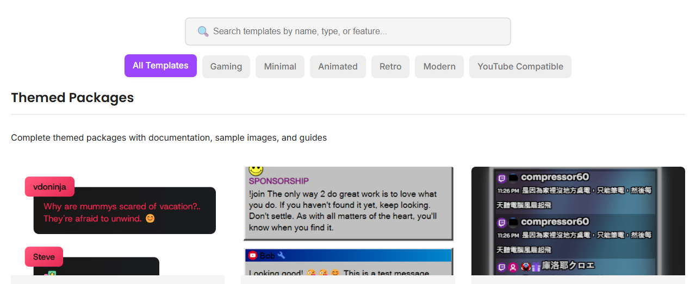
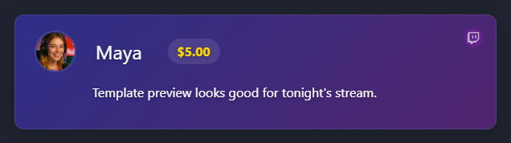

Выберите макет, добавьте идентификатор сеанса и вставьте ссылку в OBS.
Используйте Галерея шаблонов если нужно готовое оформление чата без создания CSS с нуля.

Каждому URL оверлея нужен идентификатор сеанса. Замените заполнитель тем же сеансом, который используют источник чата и док-панель.
https://socialstream.ninja/sampleoverlay.html?session=YOUR_SESSION_ID
Сначала откройте URL шаблона в браузере. Если там всё выглядит правильно, разобраться с OBS будет проще.

Если оверлей пуст, проверьте док-панель перед изменением настроек шаблона.
https://socialstream.ninja/dock.html?session=YOUR_SESSION_ID

Подробнее: Быстрый старт с OBS.